如何立项
先用高保真方案建立结果感，再把改版价值与商业化诉求、工程效率绑定，争取产研资源。
Case 01 / Design System
UI Rebranding 1.0 与 2.0：从底层 Token、组件规范到 AI 时代的视觉语言升级。
项目背景
Meegle 将流程、角色、字段与排期沉淀在同一套可配置系统中。随着产品从内部工具走向商业化，界面升级不再是单点美化，而是要建立一套视觉、组件与工程同源的体验底座。
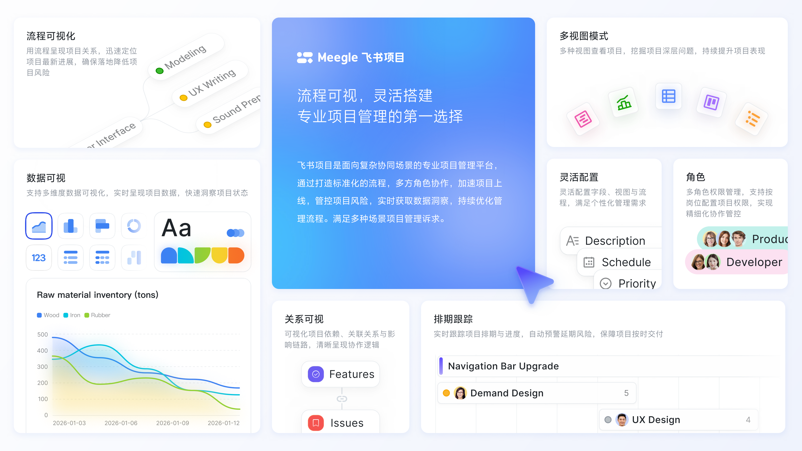
问题定义
内部模块风格不一、走查成本高，设计资产和研发实现缺少统一标准；外部客户行业增多，对品牌定制、暗色模式、多语言和专业感的要求也更高。
因此项目目标被定义为：建立可规模化复用的设计体系，让视觉表达、组件资产与工程交付在同一套规则下协同，并为后续品牌定制和功能迭代留出空间。
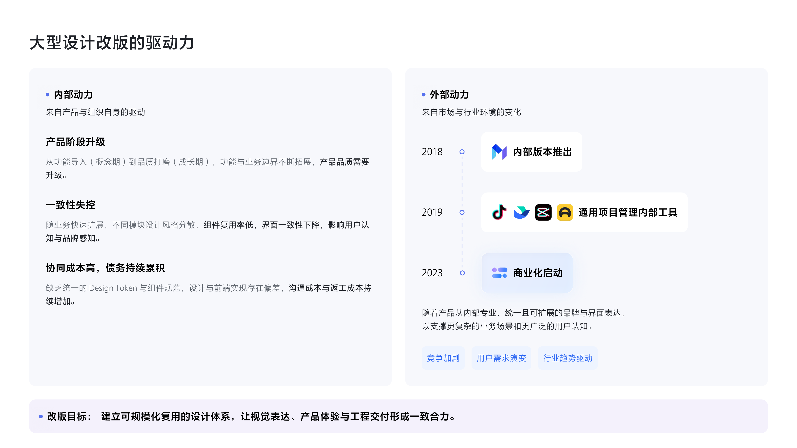
推进方法
项目分为立项、组件完善、整体精修、验证交付四个阶段。我的角色也随阶段变化：从推动共识，到制定规范，再到协同研发和质量验收。
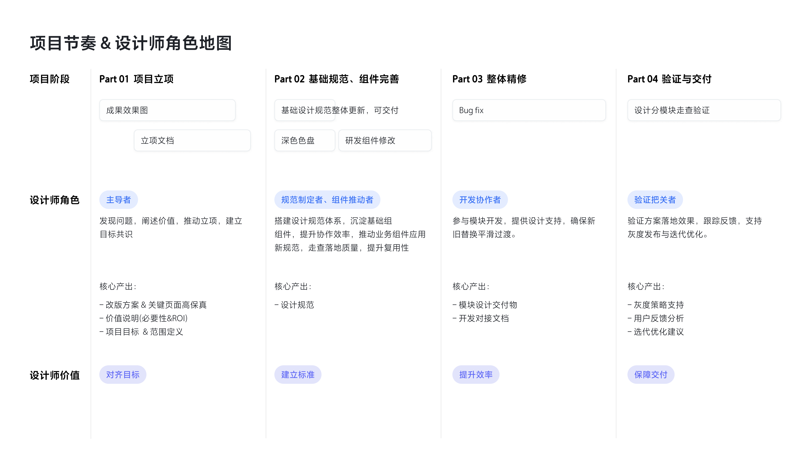
先用高保真方案建立结果感，再把改版价值与商业化诉求、工程效率绑定，争取产研资源。
通过 DSM Token 和 Coverpage 入口，让设计与研发从同一套标准化组件和变量出发。
用 P0–P3 分级管理问题，并通过飞书项目表格追踪责任人、状态和截止时间。
新增与修改文案统一进入文案平台，保障中英日等语言版本一致。
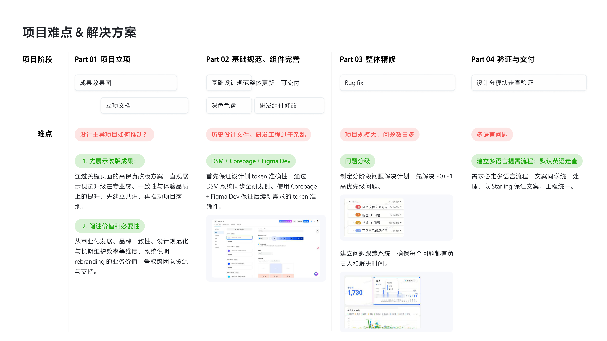
系统落地
颜色、间距、字体不再依赖页面级经验。Raw 色值、基础色阶和语义 Token 层层映射，亮暗主题与品牌定制都从同一套规则中派生。
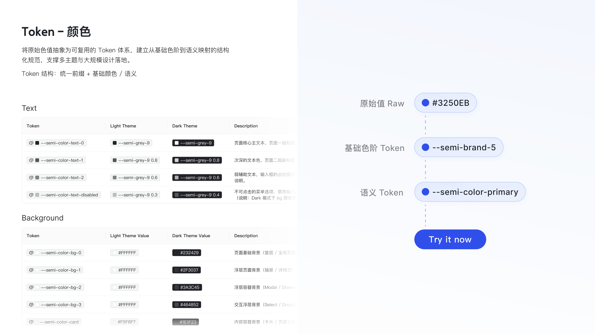
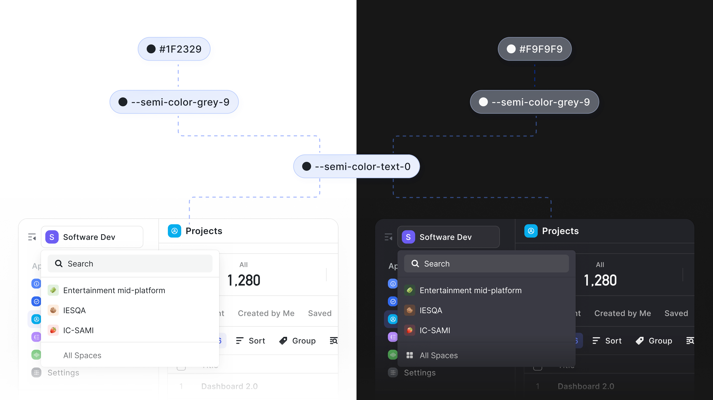
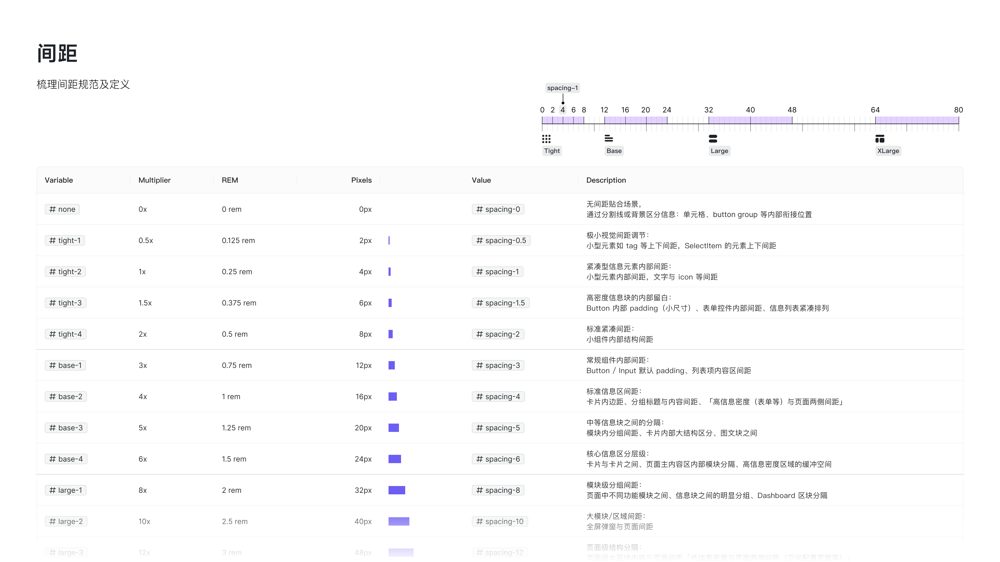
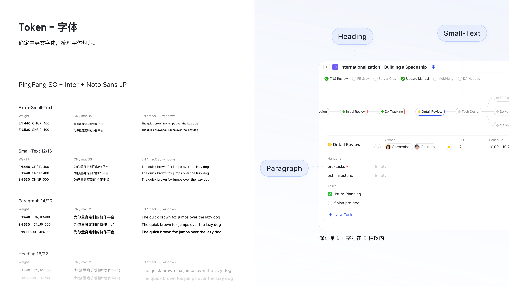
详情页与列表页减少灰底堆叠，用统一容器、分割线、投影和组件状态组织信息。用户能更快聚焦流程、字段和数据，研发也能按 Token 批量复用样式。
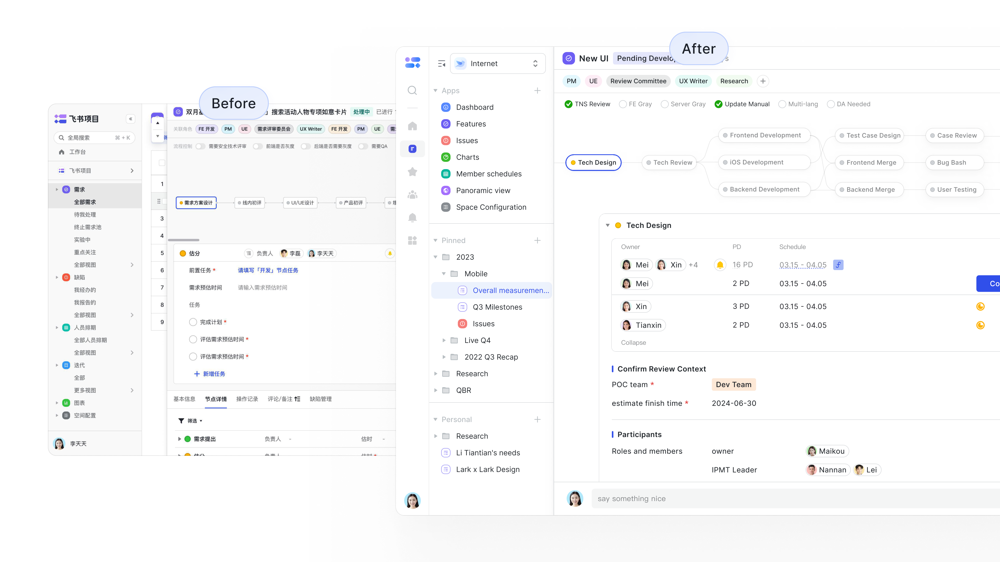
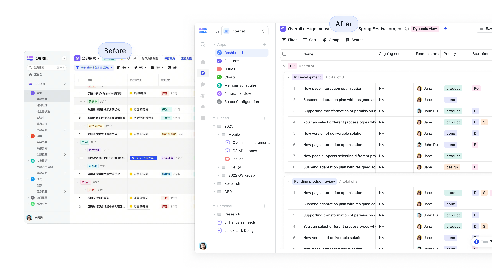
项目结果
暗色模式满足长时间工作与低光环境；整体视觉升级提升专业感和可信任感。
沉淀亮暗色、颜色、字体、间距、组件和页面规范，支持品牌色与 Logo 定制。
颜色、阴影、字体、间距进入规范化资产，减少重复实现和后续维护成本。
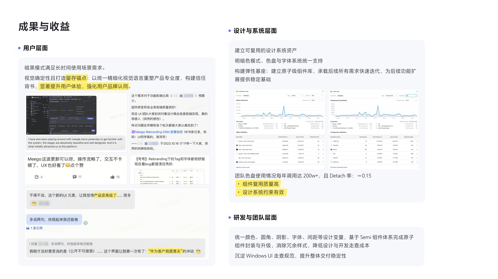
AI 时代 2.0
基于 1.0 已沉淀的 Token 和组件体系，从「形、色、字、构、质」推导新的视觉语言，优先更新导航、弹窗、表单、AI 入口等高频高感知区域。
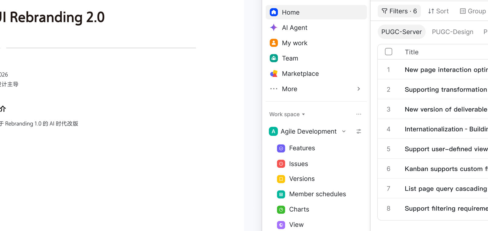
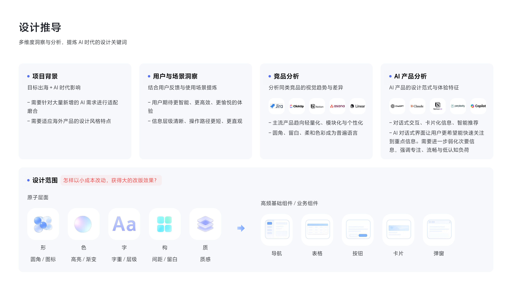
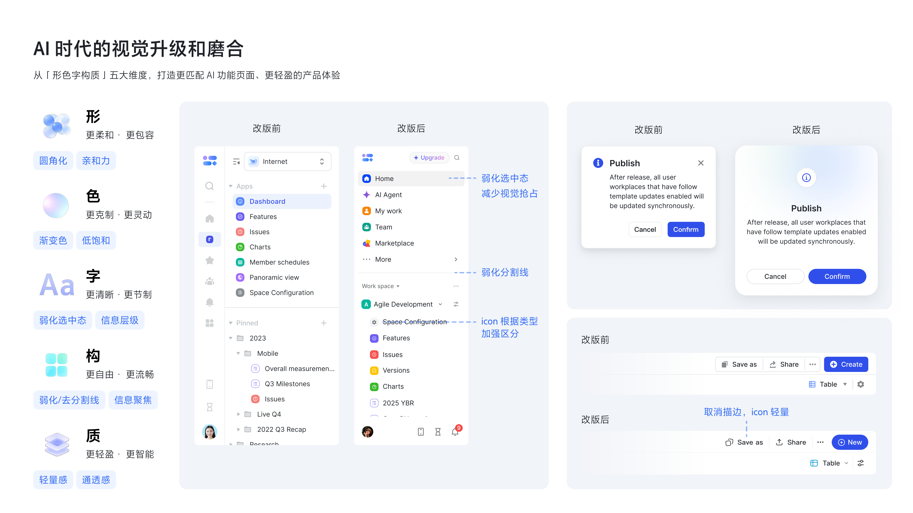
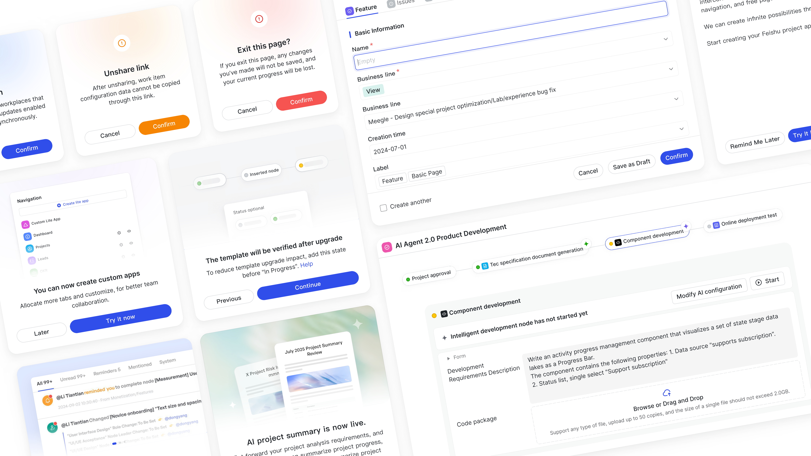
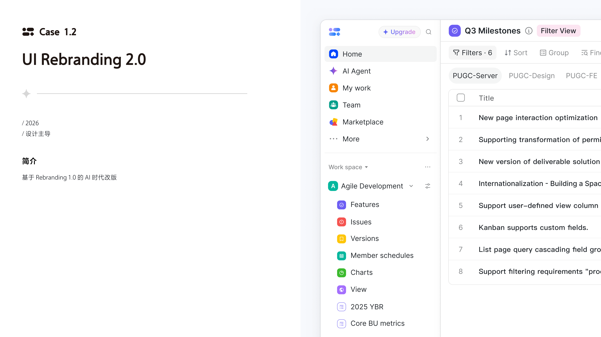
复盘沉淀
大型改版需要更精细地选择灰度客户，并补充 Windows 端字体、暗色模式和小屏验证。改版周期平台满意度提升 19 个百分点。
规范从 Figma 文件沉淀为产品、研发、运营都能访问的组件与模板入口，支持一键复制并保持 Token 一致。
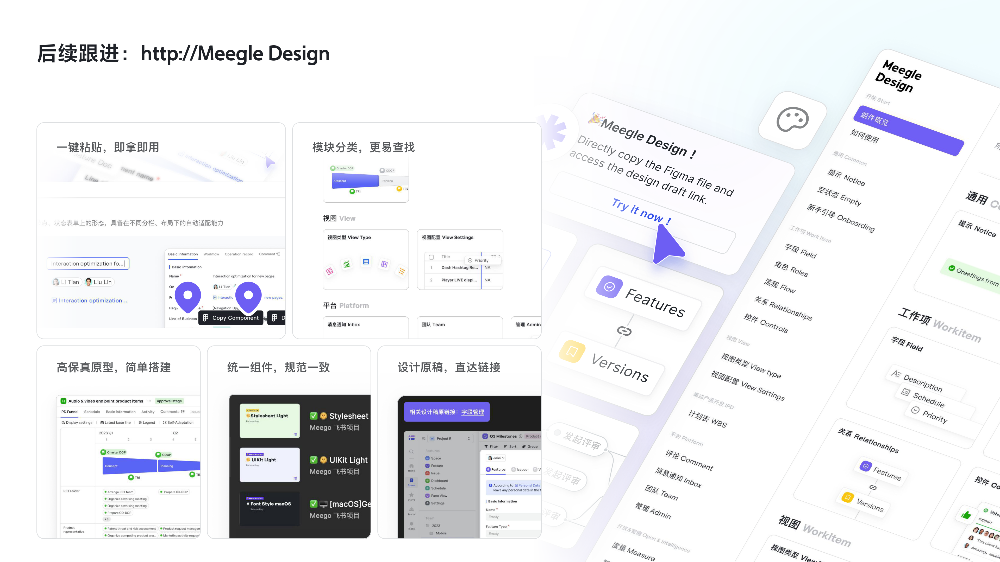